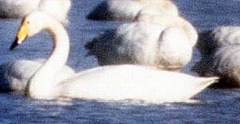

These photographs accompany records that have been recently submitted to the committee. This record has been ACCEPTED.

Whooper Swan
Cygnus cygnus
1 Jan. 1999, Seven Mile Lane, GLE 1999-076
© 1999 Steven R. Emmons
Back to CBRC Rare Bird Photos